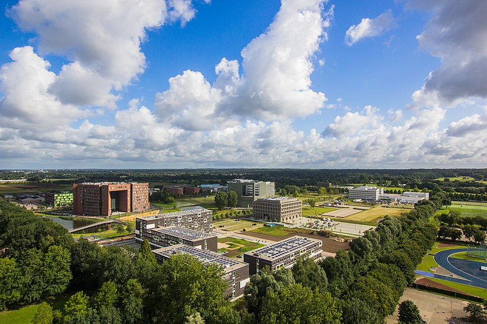

Wageningen
- Inwonersaantal: 38.774
- Oppervlakte: 32,36 km²
- Provincie: Gelderland
- Capitulatie WOII Nazi-Duitsland
- Wageningen universiteit
Studentenstad
 Als je in Wageningen komt, voel je meteen dat het hier anders is dan in andere steden in de wijde omgeving. Want waar is de sfeer zo internationaal, gemoedelijk en gastvrij als hier? De vele, internationale studenten bepalen het straatbeeld en de gezelligheid op de diverse terrassen in het centrum. Je vindt hier restaurants met keukens uit alle windstreken. Neem ook eens een kijkje op de moderne en groene campus van de Universiteit. Als je van architectuur houdt of kunst, kom je daar ogen tekort.
Bevrijdingsstad
Wageningen is ook de stad waar aan het einde van de Tweede Wereldoorlog de geallieerden onder aanvoering van generaal Foulkes en de Duitse bezetter onder generaal Blaskowitz onderhandelden over de wijze waarop de Duitse militairen zich dienden te gedragen na de capitulatie. De gesprekken begonnen op 4 mei 1945 in een boerderij in Nude, ten westen van Wageningen, en werden op 5 mei voortgezet in Hotel De Wereld in Wageningen. Dat kwam omdat Hotel de Wereld tussen beide kampen lag. De geallieerden troepen hadden hun kamp op de Grebbeberg en de Duitse troepen lagen bij de Edese hei.[2] Prins Bernhard van Lippe-Biesterfeld, de echtgenoot van de toenmalige kroonprinses Juliana, was als bevelhebber van de Binnenlandse Strijdkrachten aanwezig in Hotel de Wereld. Een overeenkomst werd op die dag opgesteld, maar pas een dag later getekend. Het ondertekende document, bekend geworden als de Nederlandse capitulatieakte, is te beschouwen als een uitwerking van de algehele capitulatie door de Duitse krijgsmachten voor Noordwest-Europa op 4 mei. De akte zelf, aanwezig in het Gemeentearchief Wageningen, is gedateerd Wageningen, 5 mei 1945. De viering van Bevrijdingsdag in Nederland op 5 mei is hierop gebaseerd. De capitulatie werd in Wageningen tot en met 2005 jaarlijks groots herdacht met een defilé van oud-militairen van Amerikaanse, Britse en Canadese afkomst en tot en met 2004 afgenomen door de in dat jaar overleden prins Bernhard. In 2005 werd het defilé afgenomen door Prins Willem-Alexander. Vanaf 2006 vindt het Bevrijdingsdefilé plaats, een veel rijker geschakeerde optocht van oorlogsmaterieel en veteranen uit de Tweede Wereldoorlog en andere uitzendgebieden. In het Bevrijdingsdefilé is ook ruimte voor goede doelen en basisschoolleerlingen. In Wageningen zijn meer dan 60 objecten als rijksmonument beschermd. Het merendeel staat in de historische binnenstad. Daarnaast zijn meer dan 400 objecten als gemeentelijk monument beschermd.